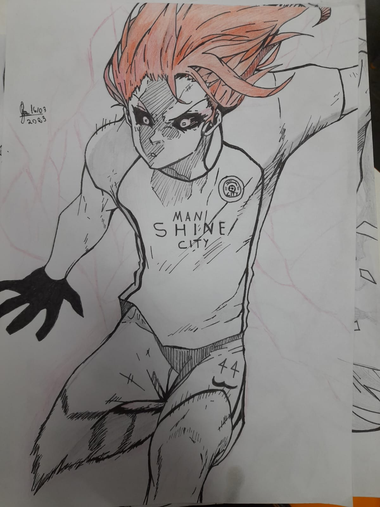

Sobre mim
Formação
Portifólio
Contato
Trabalhos que ja fiz
Eu ainda sou novo nesse quesito, entao nao fiz muitos trabalhos, mas um que eu gosto de destacar eh o trabalho da otra bateria que fiz no figma, aqui esta ele:
Netflix!
Ja que o professor sugeriu o desenho:
